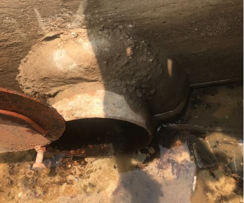
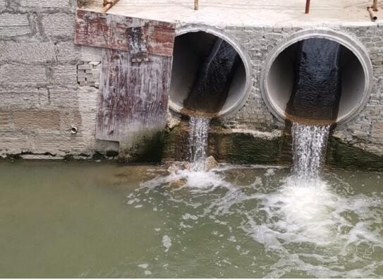
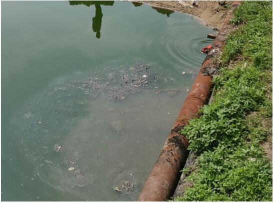

福建福清市江阴港城经济区治污不力 周边部分海域水质严重恶化
7月26日，中央第二生态环境保护督察组对福建省福清市江阴港城经济区开展了下沉督察。督察发现，该经济区管委会水污染防治工作不力，园区企业废水偷排问题突出，大量生活污水未经处理直排入海，污水处理厂提标改造任务不落实，导致福清市兴化湾部分海域水质呈现恶化趋势。
一、基本情况
福建省福清市江阴港城经济区位于兴化湾江阴半岛，其前身为江阴工业集中区，2006年升格为省级经济开发区，2018年更名为港城经济区，是福建省第三大化工产业基地，现有医药、精细化工等工业企业57家，2018年规模以上工业产值达263亿元。福清市江阴镇、新厝镇位于该经济区内，现有常住人口约7.5万人。
二、主要问题
（一）部分企业废水偷排问题突出。2019年5月生态环境部组织的现场检查发现，江阴港城经济区工业集中区附近河道水质污染严重，总氮浓度最高达181毫克/升，超出经济区污水处理厂排放标准8倍；河道入海闸口化学需氧量浓度达338毫克/升，超出地表水Ⅴ类标准7.4倍。

图1 耀隆化工私设暗管，将工业废水接入雨水管道
福州耀隆化工集团公司是该经济区内规模较大的合成氨企业，现有合成氨产能21万吨/年，日均排放工业废水1500吨。7月26日，督察组现场抽查发现，该企业私设暗管，利用雨水排口偷排高浓度废水，COD浓度高达357毫克/升。进一步调阅资料发现，该企业在2019年6月11日就因利用雨水排口偷排废水被处罚，短短一个月内再次违法排污，顶风作案，性质恶劣。此外，该企业还以安全生产为名，拒绝环保部门突击检查，经济区环保执法部门只有在得到企业许可后方能进入企业对污水处理设施检查。周边群众对该企业环境污染问题反映强烈，督察期间多次来信举报该企业“跑冒滴漏严重，破坏周边环境”。
图2 耀隆化工利用雨水排口违法排污
**（二）大量生活污水长期直排兴化湾。**港城经济区2013年规划调整时就明确要求将福清市江阴、新厝两镇生活污水纳入经济区污水处理厂集中处理。但港城经济区管委会推动管网建设不力，进度严重滞后，截至本次督察进驻时，江阴、新厝两镇生活污水配套管网仍未建成，两镇每天1万余吨生活污水通过沟渠直排兴化湾。督察组现场检查发现，两个镇区周边水体普遍黑臭，江阴镇安置区河道氨氮浓度高达22.5毫克/升，属于重度黑臭。2018年，原福州市住建委组织对福清市农村生活污水治理工作开展专项督查。福清市住建局在明知江阴镇生活污水尚未收集处理的情况下，仍虚报江阴镇污水已接入港城经济区污水处理厂集中处理，工作弄虚作假。

图3 周边生活污水直排环境
**（三）污水处理厂提标改造六年不落实**。港城经济区污水处理厂于2010年建成投运，目前实际处理量约2万吨/日，一直无脱氮处理工艺，执行排放标准偏低。2013年以来，港城经济区开展多轮规划修编，相应的规划环评意见均明确要求对污水处理厂实施提标改造，严格控制总氮排放。但港城经济区管委会重规划项目落地、轻环评要求落实，一直未开展污水提标改造工作，规划环评意见成为“一纸空文”。2017年12月，原福建省环保厅发布近岸海域污染防治方案，进一步明确要加强工业集聚区污染治理，污水集中处理设施应具备脱氮除磷工艺。但港城经济区管委会不重视，不落实，污水处理厂提标改造任务再次落空。督察组现场检查发现，经济区污水处理厂每天约2万吨工业废水总氮长期超标排放，2019年上半年排水总氮平均浓度高达110毫克/升，超标4.5倍。经济区内应按行业标准严格控制总氮排放的医药企业，也借集中纳管之名规避行业达标排放要求。如，福抗药业公司和福兴医药公司是经济区内规模较大的化学合成类制药企业，每天向污水处理厂排放废水分别为2700吨和2400吨，总氮浓度分别高达260毫克/升和150毫克/升，超出行业排放标准7.7倍和4倍。
（四）兴化湾部分海域水质严重恶化。受港城经济区污水处理厂超标排放、企业偷排和生活污水直排等问题的影响，近年来，福清市兴化湾经济区西侧海域水质呈现明显的恶化趋势，海水无机氮浓度从2015年的0.27毫克/升增至2017年的0.5毫克/升，2018年依然达到0.41毫克/升，水质由Ⅱ类恶化到Ⅳ类。2019年2月监测结果显示，该海域海水无机氮浓度高达0.89毫克/升，同比上升74.5%，水质严重恶化为劣Ⅳ类。
三、原因分析
耀隆化工集团公司顶风作案，违法排污，性质恶劣。福清市及江阴港城经济区管委会认识不足、履职不力，对兴化湾海域水质恶化问题未予重视,对规划环评和近岸海域污染防治工作要求落实不力，造成污水处理厂提标改造工作长期落空，企业违法偷排、生活污水直排等问题一直得不到解决。福清市住建局弄虚作假，应对检查。
督察组将进一步调查核实情况，推动地方加快问题整改，对存在失职失责的，将要求地方依纪依法查处到位。
本文信息来源国家生态环境部
原文编辑: EHS资讯
原文链接: https://ehsinfo.cn/2019/08/26/江阴港城海域水质恶化.html
版权声明: 转载请注明出处(必须保留作者署名及链接)